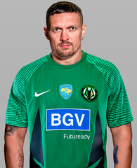
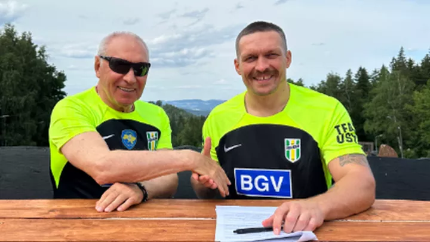

Олександр Усик
Що повʼязує його з цим клубом ?
Людина, її життя і здоров'я, честь і гідність, недоторканність і безпека визнаються в Україні найвищою соціальною цінністю. Права і свободи людини та їх гарантії визначають зміст і спрямованість діяльності держави. Держава відповідає перед людиною за свою діяльність. Утвердження і забезпечення прав і свобод людини є головним обов'язком держави. В Україні існує єдине громадянство. Підстави набуття і припинення громадянства України визначаються законом.
Україна є республікою. Носієм суверенітету і єдиним джерелом влади в Україні є народ. Народ здійснює владу безпосередньо і через органи державної влади та органи місцевого самоврядування. Право визначати і змінювати конституційний лад в Україні належить виключно народові і не може бути узурповане державою, її органами або посадовими особами. Ніхто не може узурпувати державну владу.
Сашко сидить з мужиком, роблять домашку, зверстали мабуть щось.
Земля, її надра, атмосферне повітря, водні та інші природні ресурси, які знаходяться в межах території України, природні ресурси її континентального шельфу, виключної (морської) економічної зони є об'єктами права власності Українського народу. Від імені Українського народу права власника здійснюють органи державної влади та органи місцевого самоврядування в межах, визначених цією Конституцією. Кожний громадянин має право користуватися природними об'єктами права власності народу відповідно до закону. Власність зобов'язує. Власність не повинна використовуватися на шкоду людині і суспільству. Держава забезпечує захист прав усіх суб'єктів права власності і господарювання, соціальну спрямованість економіки. Усі суб'єкти права власності рівні перед законом.
Державними символами України є Державний Прапор України, Державний Герб України і Державний Гімн України. Державний Прапор України — стяг із двох рівновеликих горизонтальних смуг синього і жовтого кольорів. Великий Державний Герб України встановлюється з урахуванням малого Державного Герба України та герба Війська Запорізького законом, що приймається не менш як двома третинами від конституційного складу Верховної Ради України. Головним елементом великого Державного Герба України є Знак Княжої Держави Володимира Великого (малий Державний Герб України). Державний Гімн України — національний гімн на музику М. Вербицького із словами, затвердженими законом, що приймається не менш як двома третинами від конституційного складу Верховної Ради України.